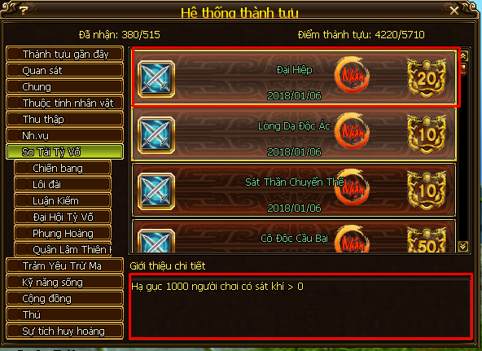
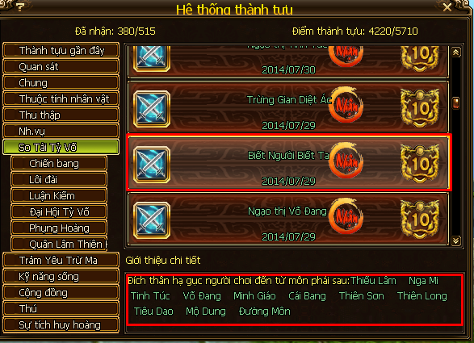
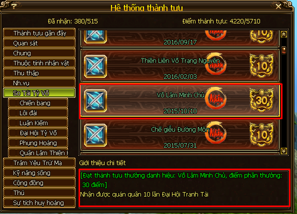
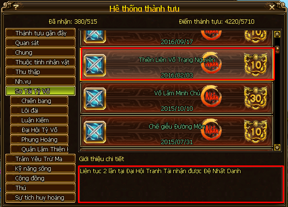

Cô Độc Cầu Bại¶
Có thể mở bảng Thành tựu, So Tài Tỷ Võ để kiểm tra thông tin về cách tìm danh hiệu này.
Thì để hoàn thành thành tựu chính Cô Độc Cầu Bại (nhận được danh hiệu), cần hoàn thành các thành tựu con như sau:
Đại Hiệp
Hạ gục 1000 người chơi có sát khí > 0.
Mẹo: bạn lấy các acc phụ ra thành giết acc chính của bạn cho lên sát khí, làm cả một tổ đội 6 acc phụ có sát khí thì quá trình làm càng nhanh. Sau đó vào lôi đài khiêu chiến với đội 6 acc sát khí, acc chính giết hết các acc phụ có sát khí, cứ thế lặp đi lặp lại: khiêu chiến -> giết sạch -> khiêu chiến lôi đài -> … Nếu đủ 6 acc có sát khí thì bạn cần khiêu chiến lôi đài và giết sạch chúng khoảng 1000 /6 ~ 167 lần.
Sát Thần Chuyển Thế
Hạ gục 200 người chơi trong bảng kẻ thù.

Mẹo: cũng với cách làm với thành tựu Đại Hiệp kia, nhưng lưu ý để các acc phụ là kẻ thù thì acc phụ không được hảo hữu với acc chính và giết acc chính ở ngoài thành mới trở thành kẻ thù được nhé! Sau khi đã lã kẻ thù rồi thì kéo vào thành lôi đài là được, lặp đi lặp lại giống cách làm Đại Hiệp
Biết Người Biết Ta
Lôi đài và hạ gục 10 môn phái khác nhau (Thiêu Lâm, Nga Mi, Tinh Túc, Võ Đang, Minh Giáo, Cái Bang, Thiên Sơn, Thiên Long, Tiêu Dao, Mộ Dung, Đường Môn).
Vô Miện Chi Vương
Nhận được 500 trận thắng.

Bạn vào lôi đài khiêu chiến 500 lần thắng sẽ hoàn thành.
Ngoài ra hoàn thành thành tựu con này cũng nhận được danh hiệu Đơn Thiêu Vương.
Mẹo: nên kết hợp làm chung với Đại Hiệp và Sát Thần Chuyển Thế
Võ Lâm Minh Chủ
10 lần đạt danh hiệu Tỷ Võ Trạng Nguyên.
Vào lúc 15:00, thứ 4 và thứ 7 hằng tuần bạn báo danh vào tỷ võ Tô Châu và cố gắng đạt danh hiệu Tỷ Võ Trạng Nguyên.
Hoàn thành thành tựu con, bạn cũng nhận được danh hiệu Võ Lâm Minh Chủ.
Nếu một tuần bạn tham gia đủ 2 lần vào thứ 4 và thứ 7 và đạt danh hiệu Trạng Nguyên, thì bạn chỉ mất 10 /2 = 5 tuần, thực tế có thể sẽ lâu hơn nếu máy chủ có người tham gia cạnh tranh.
Nếu lôi đài 9x, 10x, 11x bị cạnh tranh quá, thì mình nghĩ bạn nên đầu tư danh hiệu cho một acc mới chơi khác, cho acc đó lên 3 hoăc 4x rồi vào tỷ võ 3, 4x, cơ hội giành Tỷ Võ Trạng Nguyên sẽ cao hơn! (cốt là để giành lấy Võ Lâm Minh Chủ từ lúc cấp thấp cho dễ!)
Thiền Liên Võ Trạng Nguyên
2 lần liên tục đạt danh hiệu Tỷ Võ Trạng Nguyên (Thứ 4 đánh thắng rồi tới thứ 7 cũng đánh thắng giành Tỷ Võ Trạng Nguyên).
Biên soạn: Ling Yun - Giao Long 07 - Ngày 10 tháng 1 năm 2018